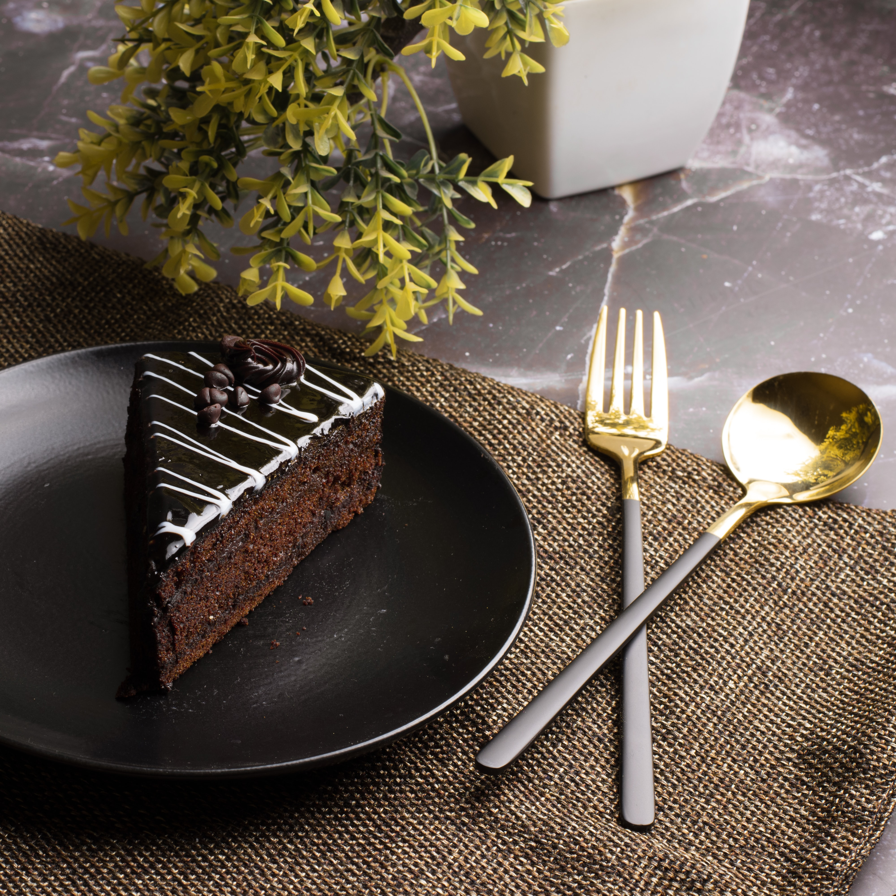

Aşırı çikolatalı, kahveli ve kakaolu kolay bir tarif ile muhteşem bir kek yapabilirsiniz.

Kaç kişilik: 8
Hazırlama süresi: 1 saat
Pişirme süresi: 45 dk
Malzemeler
2 bardak un (320 gr)
4/5 bardak şeker (200 gr)
2 adet yumurta
1 çorba kaşığı pekmez
4/5 bardak süt (200 ml) içine 2 çorba kaşığı sirke
3/5 bardak sıvıyağ (150 ml)
4 çorba kaşığı kakao (50 gr) üzerine 2/5 bardak kahve (100 ml)
1 paket vanilin
Yarım paket kabartma tozu
1 çay kaşığı karbonat
1 paket bitter çikolata (80 gr)
1 paket sütlü çikolata (80 gr)
Yapılışı
2 yumurta ve şekeri mikser yardımı ile 10 dakika kadar çırpalım.
Karışıma sırasıyla süt, un, pekmez, bir çimdik tuz ilave edelim.
Kakaonun içerisine 100 ml kadar kahve ilace edip hiç topak kalmayana kadar karıştıralım. Daha sonra kakao ve kahve karışımını diğer karışımımıza ilave edelim.
Sıvı yağı, vanilin, karbonat ve kabartma tozunu ilave dip karıştıralım.
Çikolataları iri iri rendeleyip karışıma ilave edelim
Kek kalıbını tereyağ veya sıvı yağ ile kapalayıp üzerine kakao serpelim